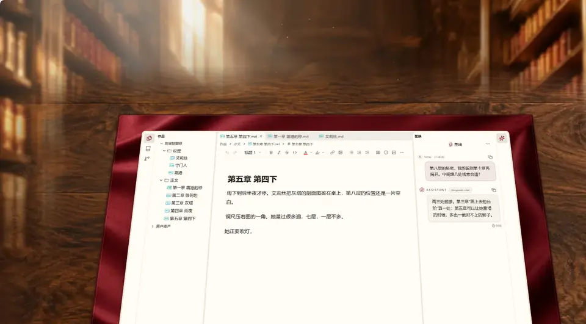
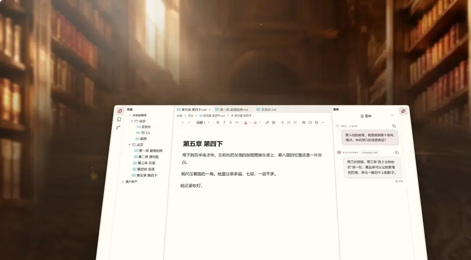
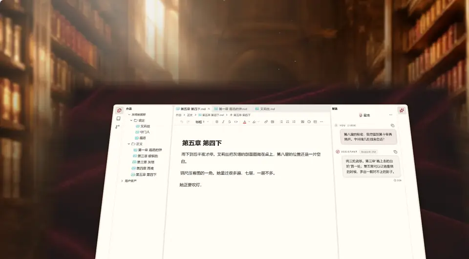
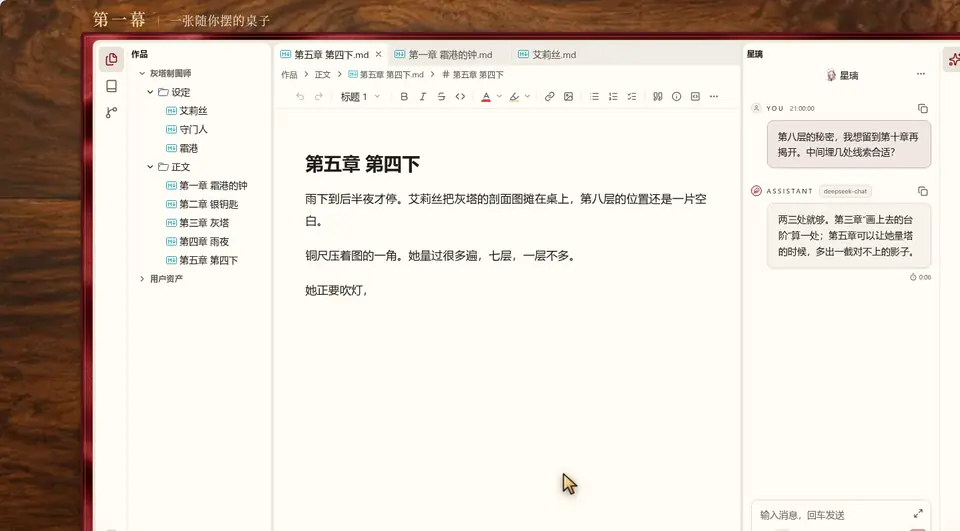
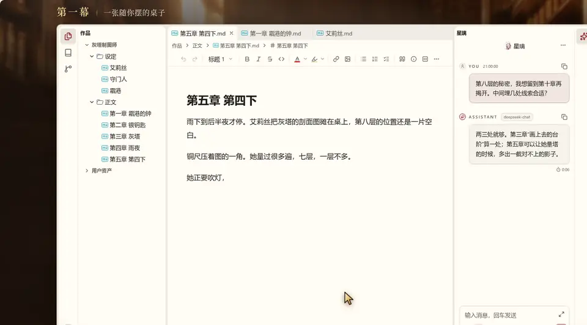
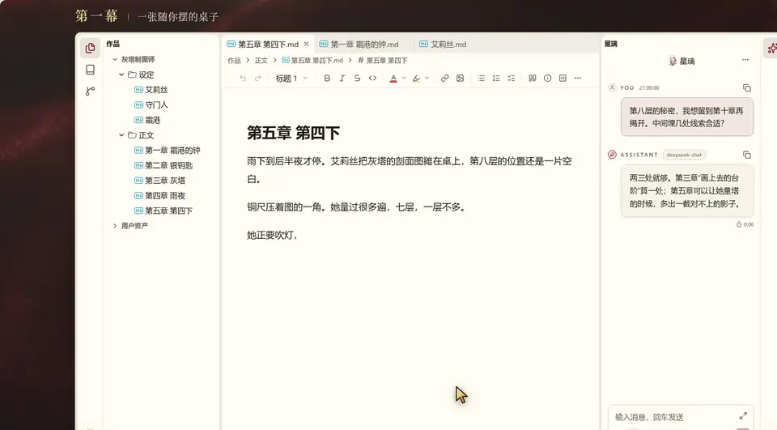

产品介绍首页：入殿·俯案成界（第 15 轮）
照第 13 轮的答复改白天：工作台下面的红布与书桌突兀，出两个候选。第 14 轮的两题都定了。
白天的案面用哪一版？
推荐：A 去掉红布。红缎与胡桃木是两张又锐又硬的贴图，自带的光和藏书阁的暖雾不是一处；A 把木案压进同一片雾里，落地后是一块匀净的暗木底，象牙色的工作台最显眼，首屏也少了一大块抢标题的红。
现在（第 12 轮起）A 去掉红布B 哑光丝绒
首屏
俯冲到一半



落地


- A：工作台直接坐在木案上，一道细金边、一层深柔影；木案首屏是压进暖雾的一张，俯冲时换成失焦压暗的一张。
- B：留一块布垫，红缎换成夜里那张哑光暗红丝绒（压暗、降饱和，没有硬包边）；俯冲时不往里收成画框，而是往外铺开，落地和夜里一样是一整片丝绒。
- 两版都只用现有的素材（两张压过的木案是从胡桃木那张用脚本压出来的），不花图片额度。@designer 也推荐 A；它说重新生成一张带景深的木案这一轮不值。
已定
- 首页给搜索进来的人，做得像产品介绍；书庭这类页面另做、自由发挥（2026-11-26）
- 截图尽量少：直接把工作台复原，让人体验到拖动、分屏与布局动画的丝滑（第 1 轮）
- 第一屏把介绍说明白，同时要有高级精美的动画，让人想往下滚；往下滚进入滚动动画（第 1 轮）
- 基调取 w00050 t06 契约仪式页的史诗、神圣、西幻气氛，不复制；现有的 NovelAI 场景图不直接用（2026-11-26）
- 要讲的功能：写作与编辑器、世界引擎、剧情（在做）、星璃与 Agent、本地与开源、插件与 SDK、桌面版、模型自选；llmlint 不列（2026-11-26）
- 先做方向一《入殿·俯案成界》；材质可以用生成的贴图，首页可以用星璃的立绘与贴纸（2026-11-26）
- 首屏方向不变、先打磨材质；按钮加金边一类的装饰，往皇室奢华感走；工作台缺省夜间配色、可以切换（第 4 轮）
- 第一幕放慢讲清楚，加回浮窗、视图换位置、关掉再打开，和首屏一样华丽（第 4 轮与会话）
- 首句用 e3“每一个世界，都从一行字开始。”，配 From words to world.（第 4 轮与会话）
- 演示的拖动用实时布局；访客动过要有恢复动画；顺手介绍编辑器的标注与高亮；整个页面要有白天；首屏静中有动、纸条可以轮播；按钮出几版（第 5 轮之后的会话）
- 第一幕不用访客滚动：落地以后自动连播，访客愿意就停着看；拖动不要上下左右中的落点分区；首屏的动静要快一些、大一些、更高级（第 6 轮之后的会话）
- 第一幕这样连播可以；章节条用古籍标尺；首屏“从字到世界”与指针响应都要，旁边的东西要能点、点了稍放大，要有跟鼠标位置、速度互动的动画；按钮用皮面烫金；白天要再改；虚拟指针压到菜单之上、拖动快些走弧线、字幕换显眼的地方、重点加遮罩（第 7 轮）
- 字幕放在工作台正上方；重点用遮罩，但高亮要做得好看；首屏能点能动手的几处可以，指针效果要更明显、更好看，考虑多加点元素；白天的桌面换成生成的旧橡木（第 8 轮）
- 高亮用鎏金标记；首屏的提灯与金丝可以；星盘与线索丝都留，但要有看得见的动画与交互；白天要更华丽，不能只有一张桌、其余灰蒙蒙（第 9 轮）
- 星盘与线索丝这样可以；白天的桌面换生成的深胡桃木，工作台的投影与四周要处理（可以垫一块红丝绸）；首屏滚动变卡要查（第 10 轮）
- 首屏滚动顺了；丝绸换成生成的缎面照片；白天首屏的上半截不要一片米黄；第一幕的拖动放慢一些、演示时指针一直显示；第二幕要有开场动画（第 11 轮）
- 白天的墙换成生成的藏书阁；第一幕拖动的快慢与一直显示的指针可以；第二幕照板上的脚本做原型（第 12 轮）
- 第一幕也要像第二幕那样有开场；滚动不能一下越过第一幕；第二幕交给访客时不要叫人接着写（第 13 轮之后的会话）
- 白天工作台下面的红布与书桌要再改；不要有用户做不出来的操作，第二幕最后交给你的那一段删掉；第五拍照脚本演右键，先给产品的标签右键菜单加上这一项（第 13 轮）
- 第一幕这样落印开场；滚动这样分站，一次最多到下一站，不加“自己滑到下一站”（第 14 轮）